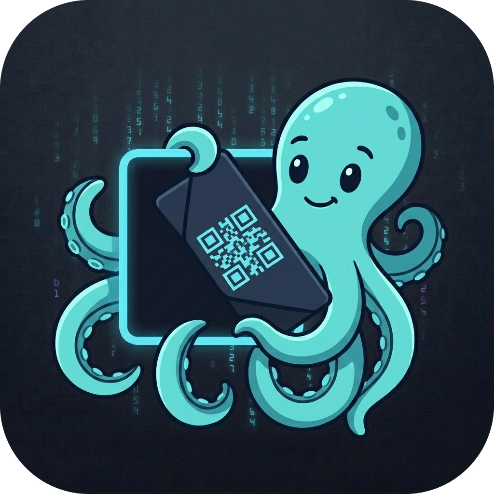
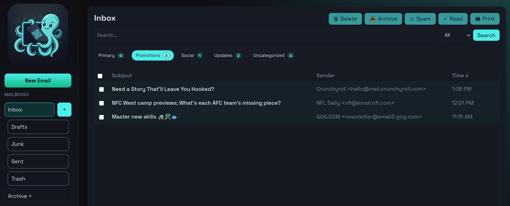
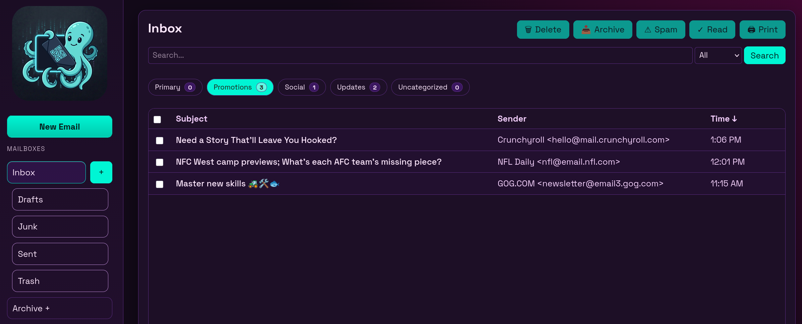
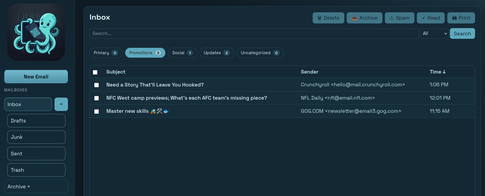
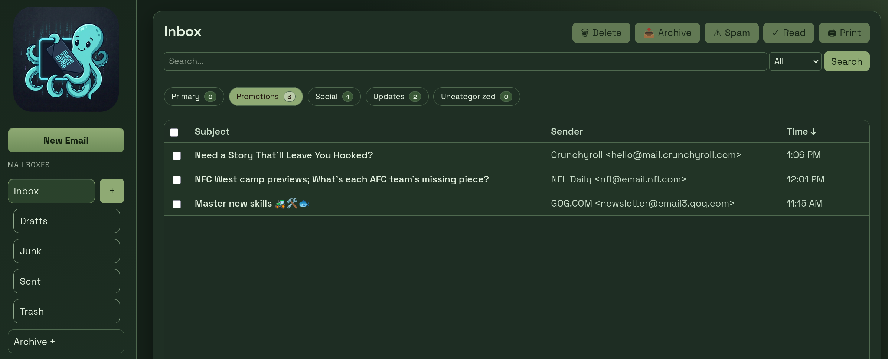
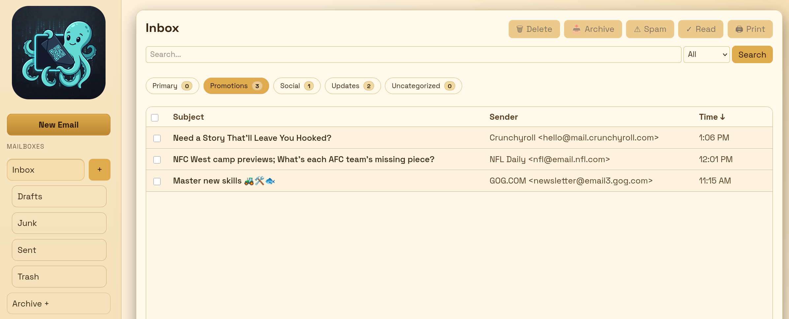
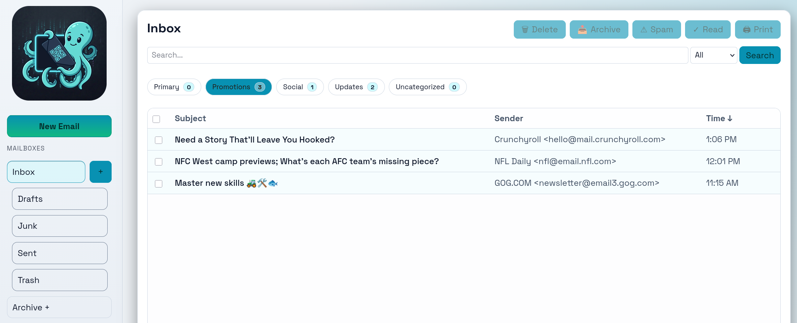

One inbox.
Every device.
Zero third parties.
KyPost is a self-hosted email ecosystem: a server you run yourself, paired with native apps for Android, iOS, macOS, and Linux — built around local AI sorting, PGP encryption, and themes that follow you everywhere.

One server. Every client.
KyPost isn't a single app — it's a self-hosted mail server plus a family of native clients that all pair to it the same way.
KyPost Server
Runs on your own hardware. Connects to your real mailbox over IMAP/SMTP, classifies unread mail with a local Ollama model, and hands off mail, push, contacts, and PGP key exchange to every paired client.
Mac & iOS
SwiftUI client that talks only to the relay — pair once, and mail, push, and contacts stay in lockstep with the server.
Android
Kotlin client that is relay-only, just like the Apple client — zero mail credentials ever stored on-device.
Linux
One Qt/Kirigami codebase for Linux Desktop, Plasma Mobile, and Ubuntu Touch — relay-only, just like the Apple and Android clients.
Plays well with others
Every surface shares the same pairing flow, the same 15 themes, and the same fonts — switching devices never means relearning the app.
Android
Relay-only, keyword tabs, PGP key signing via QR, MFA push approval.
iOS
Pairs to your server once; native inbox, PGP QR key exchange, APNs push.
macOS
Same codebase as iOS — three-pane view, pop-out readers, menu-bar shortcuts.
Linux Desktop
KDE Plasma sidebar layout, built from the same shared components as mobile.
Plasma Mobile
Same mobile UI root as Ubuntu Touch — bottom tabs, swipe-to-archive and delete.
Ubuntu Touch
Packaged as a Click for OpenStore, pixel-identical to Plasma Mobile.
Web
The server's own browser UI — config, logs, compose, and every theme, no install required.
Progressive Web App
Install the same web UI to your home screen or dock — service worker and manifest included, no app store needed.
Every client is relay-only: you pair once via QR code or deep link, and mail, push, and contacts flow through your own KyPost Server from then on.
Encrypted when you can be, protected when you can't
KyPost layers PGP encryption on top of a self-hosted core, and never falls back to sending plaintext when it doesn't have to.
PGP, verified face to face
Scan a contact's public key with your camera, confirm their fingerprint out loud, and every message to them is encrypted end-to-end from then on — Android and Mac/iOS both support this today.
Secure pickup, not plaintext
If a recipient doesn't have a PGP key yet, KyPost never sends the message body in the clear. It emails them a login link instead — the real content only unlocks after they sign in to the server.
Your server, your rules
Mail lives on infrastructure you control, and unread-mail classification runs on a local Ollama model — no cloud AI provider ever sees your inbox.
Categories, rules, and 15 themes — shared everywhere
Every client speaks the same theme language, so the way you sort mail and the way it looks travels with you.
Categories
Unread mail is auto-labeled by a local AI model and sorted into keyword tabs — no manual filing.
Rules
Tune the classifier's prompt per user to change what counts as which category, right from the web UI.
Themes
15 palettes, from Patina Ky to Cyber Punk, defined once and shared byte-for-byte across web, Android, Mac, iOS, and Linux.
Filtering
Inbox rules run as an expanded Sieve script on your own server — write a condition once and every client sees the same filtered result.
Notifications
Pick your delivery path per device: Firebase, APNs, or UnifiedPush for instant push, or plain client pull if you'd rather trade a little immediacy for a lot more privacy.
Contacts
Manage your contacts from any client, with full synchronization across web, Android, Mac, iOS, and Linux.
Scroll to preview the shared theme system — starting from the default, Patina Ky

Patina Ky
Cyber Punk
Ocean
Forest
Sun
Polished KyFour projects, one ecosystem
Everything is open source and under active development. Star, clone, or self-host any piece today.
KyPost Server
Go · React · DockerSelf-hosted IMAP/SMTP web client with local-AI keyword labeling, multi-user roles, push relays for mobile, and a dozen+ shared themes.
View on GitHubKyPost for Android
KotlinNative, relay-only email client with keyword inbox tabs, PGP key signing via QR, and MFA push approval.
View on GitHubKyPost for Mac & iOS
SwiftUIOne SwiftUI codebase for macOS and iOS — relay-only, with PGP QR key exchange, contact sync, and APNs push.
View on GitHubKyPost for Linux
Qt · KirigamiOne Qt codebase, two UI roots — Linux Desktop, Plasma Mobile, and Ubuntu Touch, with UnifiedPush notifications.
View on GitHub